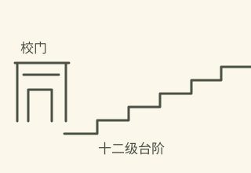

此页另封
本册此页留空。私人原页另存，未列入本次公开范围。
如后续公开，由作者与收件人分别确认。
8春天借住在四楼
一册认路的图画笔记
 1
1两张纸四面排页样稿。请先按页位手动核对翻面方向，或用两张白纸对折再贴卡。私人页默认空白；本文件不是已经获准发行的新刊。
本册此页留空。私人原页另存，未列入本次公开范围。
如后续公开，由作者与收件人分别确认。
8一册认路的图画笔记
1本次整理与修复：____________
核读者与日期：____________
排页样稿。公开范围按作者与收件人实际确认填写。
2原刊误署顾砚生，本次更正为江望原作。
本次整理贡献与旧记录的更正另行记载。私人末页未自动纳入公开版。
实际更正文案：____________
7
四楼最里面那扇门，有一道月牙似的划痕。不是暗号，是我上回搬柜子碰的。
你把新钥匙放在鞋带旁试过了，我还记得你说比旧的轻。若我赶不及回来，你先开门。灶旁蓝罐里有零钱，豆花的碗明天再还。
6
从学校回家，不要数亮着的窗。先数脚下的台阶。
校门口那盏灯有时不亮，你也认得第一块缺角的砖。往上十二级，墙边会有一个卖豆花的小窗。
3
台阶数到十二级，你就看见卖豆花的小窗了。老板若没开窗，也别站在那里等。
转弯那棵树还在。树底下总落一圈小果子，鞋底沾上会滑，先在边上蹭掉。到了春天，树影会先伸到墙上，比我回来得早。
4
过了树，还要上两层。三楼的人家养着一只猫，白天睡在窗台，傍晚睡在楼梯口。
它把尾巴横在路上，你可以绕过去。别学我叫它“师傅”，那家阿姨听见，以为我又要借她家的锤子。
5